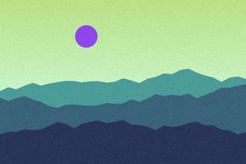
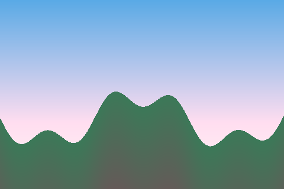
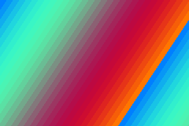
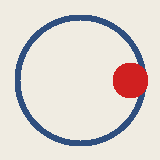
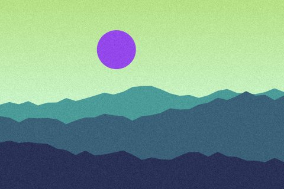
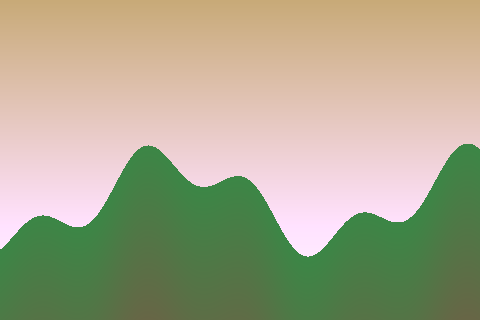
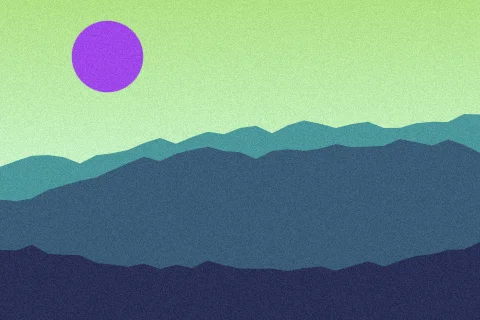
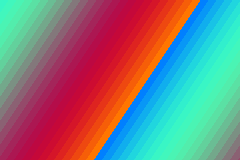
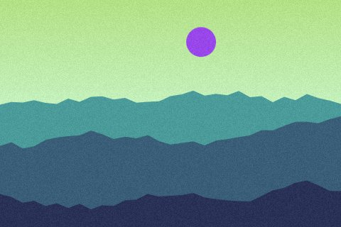
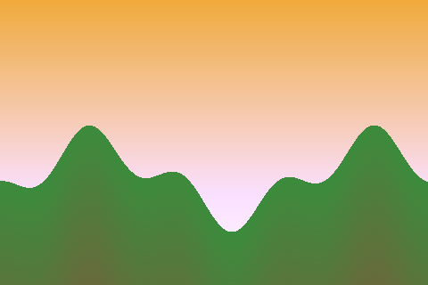

Photo grid
PNG, JPEG, GIF and WebP, an animated GIF and gradients.

hills-1.jpg

valley-1.png
hills-4.webp

bands-1.gif

spinner.gif, animated
linear-gradient

hills-2.jpg

valley-2.png

hills-5.webp
radial-gradient

bands-2.gif

hills-3.jpg

valley-3.png
hills-6.webp
repeating-linear-gradient
hills-1.jpg again
valley-1.png again
repeating-radial-gradient
hills-4.webp again
spinner.gif again
hills-2.jpg again
bands-1.gif again
valley-2.png again
hills-5.webp again
linear-gradient again
hills-3.jpg again
valley-3.png again
radial-gradient again
hills-6.webp again
bands-2.gif again
repeating-linear-gradient again
hills-1.jpg, third
valley-1.png, third
hills-4.webp, third
repeating-radial-gradient again
spinner.gif, third
hills-2.jpg, third
valley-2.png, third
hills-5.webp, third
bands-1.gif, third
linear-gradient, third
hills-3.jpg, third
valley-3.png, third
hills-6.webp, third
radial-gradient, third
bands-2.gif, third
hills-1.jpg, fourth
valley-1.png, fourth